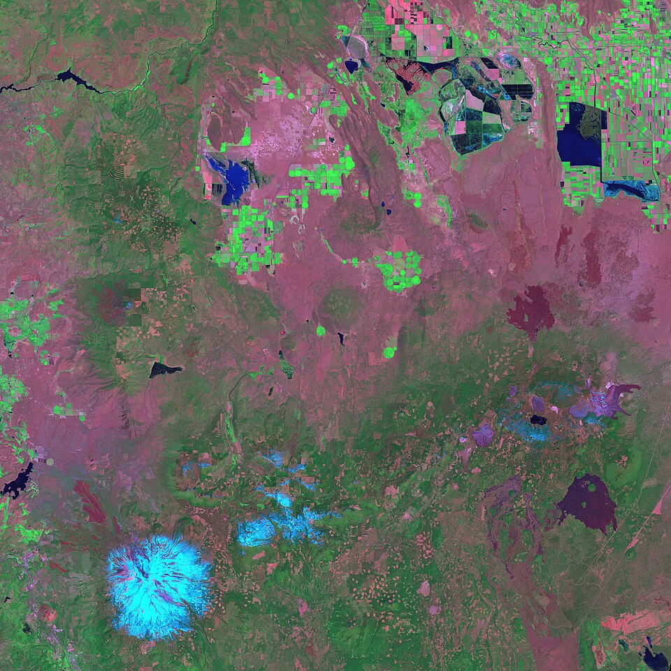
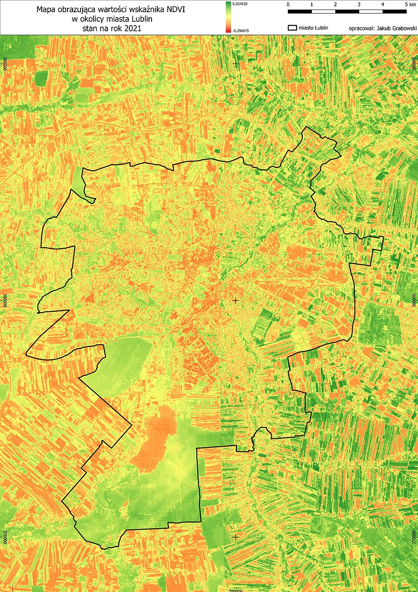
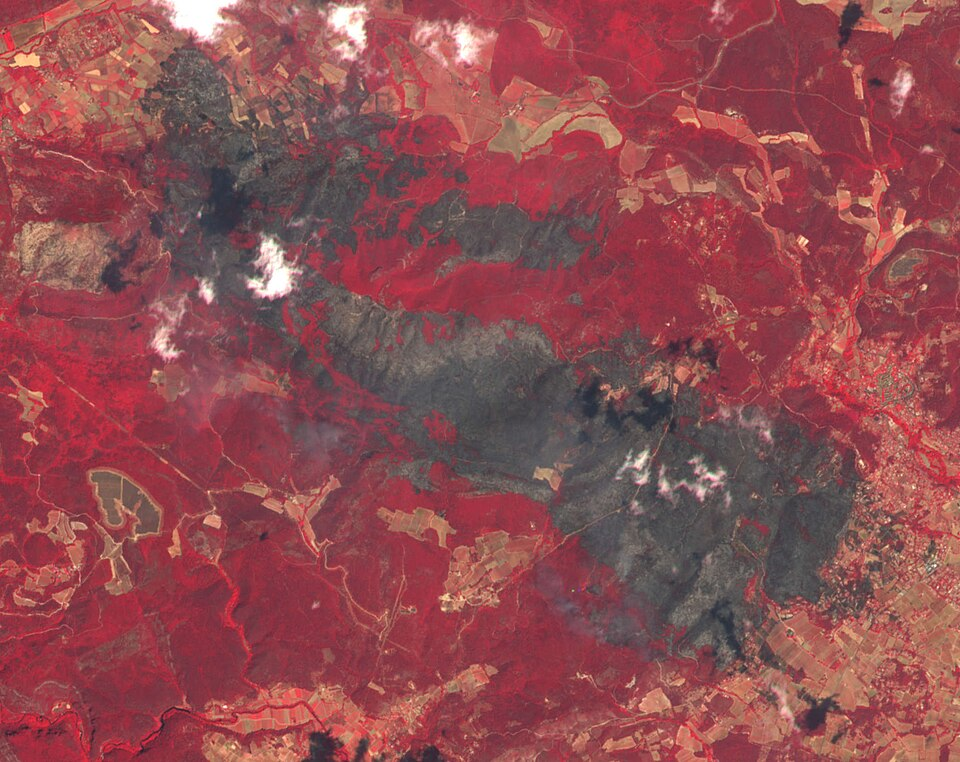
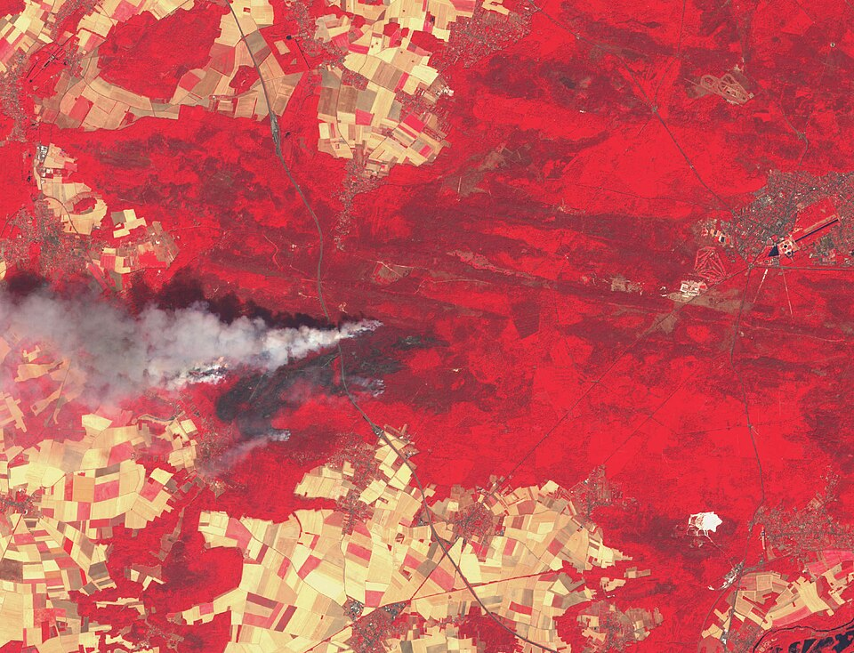
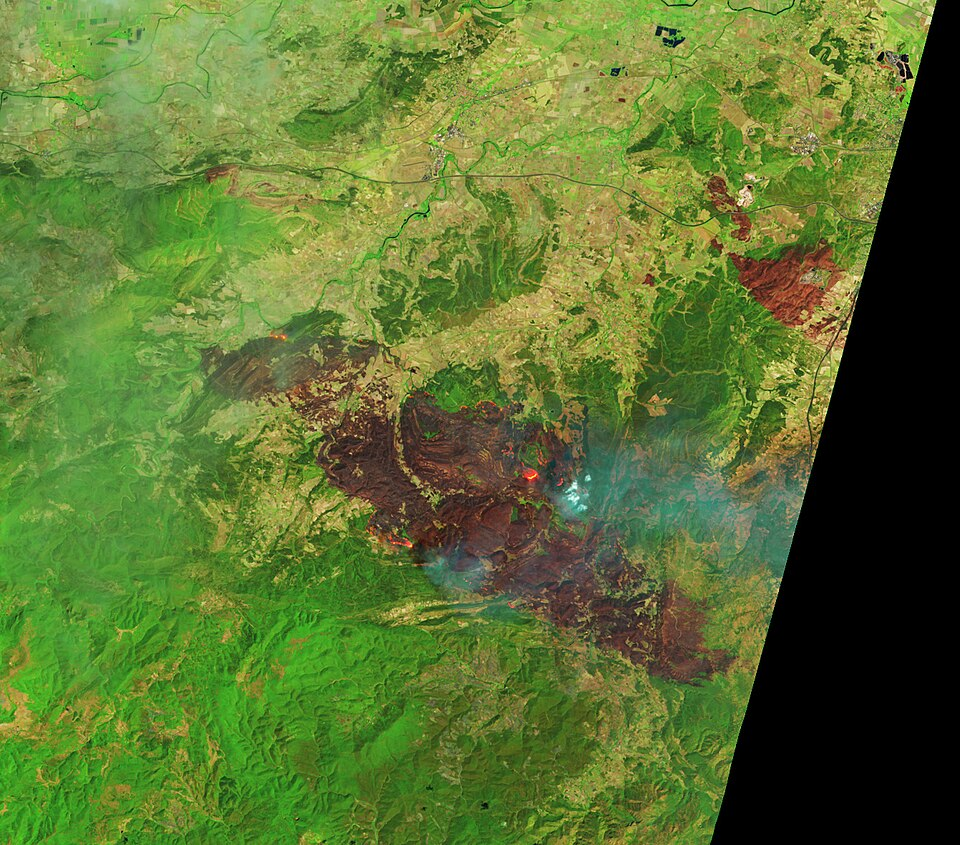

A, Fausses couleurs: references

SWIR composite: magenta and cyan instead of red. Reminder that 'false colour' has several recipes; we name ours (B08/B04/B03) on screen.
A thin black administrative boundary drawn over a continuous NDVI ramp. Borrowed: their parcel outlined in a 1 px black line over the raster.
Burnt ground reads dark grey-brown inside saturated red. Borrowed: the 'dropout' colour for an invalid field (#4A4446).
Field parcels with razor edges, tan and red, under a white smoke plume. Borrowed: parcels never anti-aliased, tan #E7C48F.
The black no-data wedge where the satellite's swath ends: a hard diagonal edge, not a frame. Borrowed for the edge of the base raster in D.